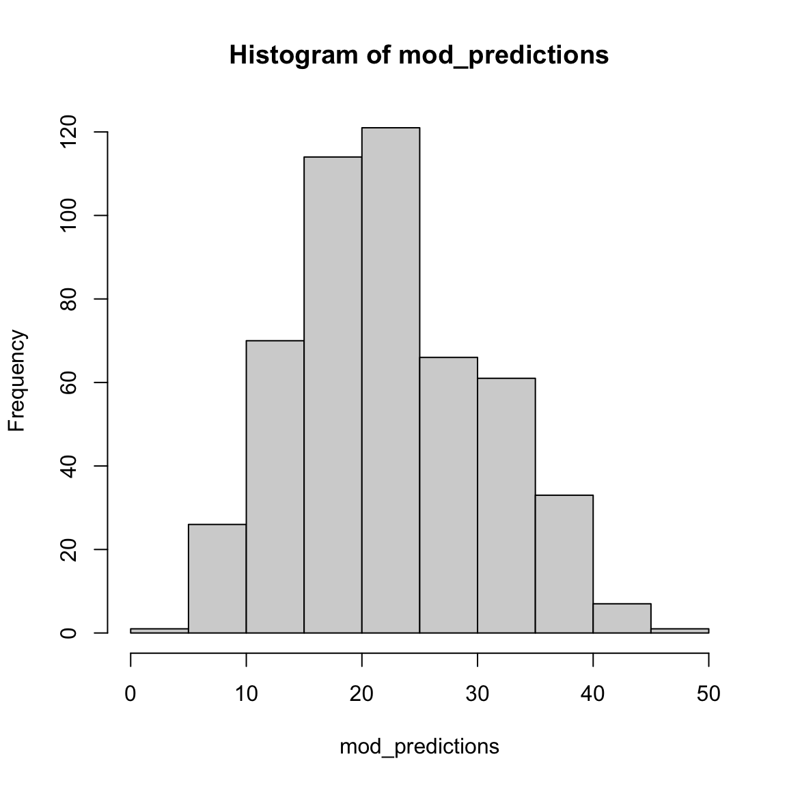

Fitting
|
Machine Learning with R The R Bootcamp |

|

adapted from xkcd.com
Overview
In this practical, you’ll practice the basics of fitting and exploring regression models in R.
By the end of this practical you will know how to:
- Fit a regression model to training data.
- Explore your fit object with generic functions.
- Evaluate the model’s fitting performance using accuracy measures such as MSE and MAE.
- Explore the effects of adding additional features.
Tasks
A - Setup
- Open your
TheRBootcampR project.
# Done!- Open a new R script. At the top of the script, using comments, write your name and the date. Save it as a new file called
Fitting_practical.Rin the2_Codefolder.
## NAME
## DATE
## Fitting practical- Using
library(), load the packagestidyverseandcaret.
# Load packages necessary for this practical
library(tidyverse)
library(caret)- In this practical, you’ll analyze a dataset of 388 U.S. Colleges. The data is stored in
college_train.csv. Using the following template, load the dataset into R ascollege_train.
# Load in college_train.csv data as college_train
college_train <- read_csv(file = "1_Data/college_train.csv")college_train <- read_csv(file = "1_Data/college_train.csv")- Take a look at the first few rows of the dataset by printing it to the console. Pay attention to the feature types, the number of features and the number of cases.
college_train# A tibble: 500 x 18
Private Apps Accept Enroll Top10perc Top25perc F.Undergrad P.Undergrad
<chr> <dbl> <dbl> <dbl> <dbl> <dbl> <dbl> <dbl>
1 Yes 1202 1054 326 18 44 1410 299
2 No 1415 714 338 18 52 1345 44
3 Yes 4778 2767 678 50 89 2587 120
4 Yes 1220 974 481 28 67 1964 623
5 Yes 1981 1541 514 18 36 1927 1084
6 Yes 1217 1088 496 36 69 1773 884
7 No 8579 5561 3681 25 50 17880 1673
8 Yes 833 669 279 3 13 1224 345
9 No 10706 7219 2397 12 37 14826 1979
10 Yes 938 864 511 29 62 1715 103
# … with 490 more rows, and 10 more variables: Outstate <dbl>,
# Room.Board <dbl>, Books <dbl>, Personal <dbl>, PhD <dbl>, Terminal <dbl>,
# S.F.Ratio <dbl>, perc.alumni <dbl>, Expend <dbl>, Grad.Rate <dbl>- Before starting to model the data, you need to do a little bit of data cleaning: Convert all character columns to factors using the following code.
# Convert character to factor
college_train <- college_train %>%
mutate_if(is.character, factor)B - Determine sampling procedure
- In
caret, the computational nuances of training a model are defined using thetrainControl()function. As this session focuses on the basics of fitting, setmethod = "none"for now and save the resulting object asctrl_none.
# Set training resampling method to "none"
ctrl_none <- trainControl(method = "none") C - Fit a regression model
- Using the code below, fit a regression model predicting graduation rate (
Grad.Rate) as a function of one feature, namelyPhD(percent of faculty with PhDs). Save the result as an objectgraduation_glm. Specifically:
- set the
formargument toGrad.Rate ~ PhD. - set the
dataargument to your training datacollege_train. - set the
methodargument to"glm"for regression. - set the
trControlargument toctrl_none, the object you created above
# graduation_glm: Regression Model
graduation_glm <- train(form = XX ~ XX,
data = XX,
method = "XX",
trControl = XX)# graduation_glm: Regression Model
graduation_glm <- train(form = Grad.Rate ~ PhD,
data = college_train,
method = "glm",
trControl = ctrl_none)- Explore the fitted model using the
summary()function, by setting the function’s first argument tograduation_glm. How do you interpret the output including the estimated parameters?
# Show summary information from the regression model
summary(XXX)# Show summary information from the regression model
summary(graduation_glm)
Call:
NULL
Deviance Residuals:
Min 1Q Median 3Q Max
-54.56 -13.38 1.34 14.13 41.58
Coefficients:
Estimate Std. Error t value Pr(>|t|)
(Intercept) 40.4084 3.9472 10.24 < 2e-16 ***
PhD 0.3401 0.0525 6.47 2.3e-10 ***
---
Signif. codes: 0 '***' 0.001 '**' 0.01 '*' 0.05 '.' 0.1 ' ' 1
(Dispersion parameter for gaussian family taken to be 350)
Null deviance: 188828 on 499 degrees of freedom
Residual deviance: 174167 on 498 degrees of freedom
AIC: 4352
Number of Fisher Scoring iterations: 2- Save the model’s fitted values. Do this by running the following code, which saves the fitted values as
glm_fit.
# Get fitted values from the graduation_glm
glm_fit <- predict(XXX)# Get fitted values from the model
glm_fit <- predict(graduation_glm)D - Evaluate performance
- Evaluate the model’s performance by comparing the fitted values of your model to the true values. Start by defining the vector
criterionas the true graduation rates in the data.
# Define criterion as Grad.Rate
criterion <- college_train$Grad.Rate- Now quantify the model’s performance using
postResample(), with the fitted values as the prediction, and the criterion as the observed values.
Specifically:
- set the
predargument toglm_fit(the fitted values). - set the
obsargument tocriterion(the criterion values).
# Model performance
postResample(pred = XXX,
obs = XXX) # Regression Fitting Accuracy
postResample(pred = glm_fit,
obs = criterion) RMSE Rsquared MAE
18.6637 0.0776 15.4097 - The output of
postResample()shows three values, RMSE, Rsquared und MAE. How do you interpret these; is the performance good or bad?
# On average, the model fits are 12.8633 away from the true values.
# Whether this is 'good' or not depends on you :)E - Add more features
So far you have only used one feature (PhD), to predict Grad.Rate. Try again, but now use a total of three features, namely:
PhD- the percent of faculty with a PhD.Room.Board- room and board costs.S.F.Ratio- student to faculty ratio.
- Using the same steps as above, create a regression model
graduation_glm_threewhich predictsGrad.Rateusing the three features. Specifically,…
- set the
formargument toGrad.Rate ~ PhD + Room.Board + S.F.Ratio. - set the
dataargument to your training datacollege_train. - set the
methodargument to"glm"for regression. - set the
trControlargument toctrl_none.
# graduation_glm_three: Regression Model
graduation_glm_three <- train(form = XXX ~ XXX + XXX + XXX + XXX,
data = XXX,
method = "XXX",
trControl = XXX)# graduation_glm_three: Regression Model
graduation_glm_three <- train(form = Grad.Rate ~ PhD + Room.Board + S.F.Ratio,
data = college_train,
method = "glm",
trControl = ctrl_none)- Explore your model using
summary(). What values were estimated for the parameters?
summary(XXX)summary(graduation_glm_three)
Call:
NULL
Deviance Residuals:
Min 1Q Median 3Q Max
-54.12 -12.40 0.69 11.44 44.59
Coefficients:
Estimate Std. Error t value Pr(>|t|)
(Intercept) 36.320318 5.966050 6.09 2.3e-09 ***
PhD 0.208207 0.053036 3.93 9.9e-05 ***
Room.Board 0.004814 0.000792 6.08 2.4e-09 ***
S.F.Ratio -0.495331 0.210170 -2.36 0.019 *
---
Signif. codes: 0 '***' 0.001 '**' 0.01 '*' 0.05 '.' 0.1 ' ' 1
(Dispersion parameter for gaussian family taken to be 316)
Null deviance: 188828 on 499 degrees of freedom
Residual deviance: 156590 on 496 degrees of freedom
AIC: 4302
Number of Fisher Scoring iterations: 2- Extract the fitted values of this new model using
predict()and save them as a new objectglm_fit_three.
# Save new model fits
glm_fit_three <- predict(XXX)# Save new model fits
glm_fit_three <- predict(graduation_glm_three)- Use
postResample()to evaluate the performance of the model with three predictors. How well does the new model fit the data, relative to the one using only one predictor.
# New model fitting accuracy
postResample(pred = XXX, # Fitted values
obs = XXX) # criterion values# New model fitting accuracy
postResample(pred = glm_fit_three, # Fitted values
obs = criterion) # criterion values RMSE Rsquared MAE
17.697 0.171 14.394 # The new MAE value is 11.779, it's better (smaller) than the previous model, but still not great (in my opinion)F - Use all features
- Alright, now it’s time to use all features available. Using the same steps as above, create a regression model
graduation_glm_allwhich predictsGrad.Rateusing all features in the dataset. Specifically:
- set the
formargument toGrad.Rate ~ .. - set the
dataargument to the training datacollege_train. - set the
methodargument to"glm"for regression. - set the
trControlargument toctrl_none.
# graduation_glm_all: Regression Model
graduation_glm_all <- train(form = XXX ~ .,
data = XXX,
method = "glm",
trControl = XXX)# graduation_glm_all: Regression Model
graduation_glm_all <- train(form = Grad.Rate ~ .,
data = college_train,
method = "glm",
trControl = ctrl_none)- Explore your model using
summary(). What do the parameter estimates tell you?
summary(XXX)summary(graduation_glm_all)
Call:
NULL
Deviance Residuals:
Min 1Q Median 3Q Max
-49.27 -10.69 0.25 10.41 49.36
Coefficients:
Estimate Std. Error t value Pr(>|t|)
(Intercept) 26.320597 7.282672 3.61 0.00033 ***
PrivateYes 2.075873 2.477211 0.84 0.40245
Apps 0.001243 0.000722 1.72 0.08554 .
Accept -0.000965 0.001339 -0.72 0.47151
Enroll 0.006891 0.003663 1.88 0.06056 .
Top10perc -0.100378 0.110002 -0.91 0.36196
Top25perc 0.289288 0.085752 3.37 0.00080 ***
F.Undergrad -0.001247 0.000584 -2.13 0.03328 *
P.Undergrad -0.001296 0.000565 -2.29 0.02224 *
Outstate 0.001436 0.000383 3.75 0.00020 ***
Room.Board 0.001294 0.000917 1.41 0.15922
Books -0.000276 0.005208 -0.05 0.95781
Personal -0.001756 0.001270 -1.38 0.16731
PhD 0.060658 0.090671 0.67 0.50382
Terminal -0.066585 0.096828 -0.69 0.49200
S.F.Ratio 0.330961 0.241530 1.37 0.17124
perc.alumni 0.195720 0.078634 2.49 0.01315 *
Expend -0.000369 0.000257 -1.44 0.15098
---
Signif. codes: 0 '***' 0.001 '**' 0.01 '*' 0.05 '.' 0.1 ' ' 1
(Dispersion parameter for gaussian family taken to be 251)
Null deviance: 188828 on 499 degrees of freedom
Residual deviance: 121047 on 482 degrees of freedom
AIC: 4202
Number of Fisher Scoring iterations: 2- Save the model’s fitted values as a new object
glm_fit_all.
# Save new model fits
glm_fit_all <- predict(XXX)# Save new model fits
glm_fit_all <- predict(graduation_glm_all)- Use
postResample()to evaluate the performance of the model with all predictors. Compare it to the previous two models with fewer predictors. Do you detect a pattern?
# New model fitting accuracy
postResample(pred = glm_fit_all, # Fitted values
obs = criterion) # criterion values RMSE Rsquared MAE
15.559 0.359 12.443 G - Factor as criterion
Now it’s time to do a classification task! Recall that in classification tasks, your are predicting a factor. In this task, you will predict whether or not a college is Private or Public, which is stored in the feature Private.
- Use
calss()to make sure that thePrivateis stores as a factor. If the output isfactor, you can proceed.
# Look at the class of the feature Private
class(college_train$Private)[1] "factor"- Now, save the feature
Privateas a new object calledcriterion.
# Define criterion as college_train$Private
criterion <- college_train$PrivateH - Fit a classification model
- Using
train(), create a logistic regression model calledprivate_glmpredicting the criterionPrivateusing all other features. Specifically,…
- set the
formargument toPrivate ~ .. - set the
dataargument to the training datacollege_train. - set the
methodargument to"glm". - set the
trControlargument toctrl_none.
# Fit regression model predicting Private
private_glm <- train(form = XXX ~ .,
data = XXX,
method = "XXX",
trControl = XXX)# Fit regression model predicting private
private_glm <- train(form = Private ~ .,
data = college_train,
method = "glm",
trControl = ctrl_none)- Explore the
private_glmobject using thesummary()function. What to you make of the estimates?
# Explore the private_glm object
summary(XXX)# Explore the private_glm object
summary(private_glm)
Call:
NULL
Deviance Residuals:
Min 1Q Median 3Q Max
-2.5443 -0.1048 0.0501 0.1859 2.4352
Coefficients:
Estimate Std. Error z value Pr(>|z|)
(Intercept) -2.13e+00 2.05e+00 -1.04 0.29827
Apps 2.04e-04 2.22e-04 0.92 0.35798
Accept -2.26e-03 4.98e-04 -4.53 6.0e-06 ***
Enroll 4.04e-03 1.20e-03 3.38 0.00074 ***
Top10perc -1.00e-01 3.48e-02 -2.88 0.00395 **
Top25perc 7.44e-02 2.57e-02 2.90 0.00373 **
F.Undergrad -2.16e-04 1.59e-04 -1.36 0.17518
P.Undergrad -1.09e-04 1.28e-04 -0.85 0.39366
Outstate 8.36e-04 1.29e-04 6.50 7.8e-11 ***
Room.Board 7.42e-04 2.92e-04 2.54 0.01110 *
Books 3.57e-03 1.58e-03 2.26 0.02410 *
Personal -3.87e-04 3.27e-04 -1.18 0.23715
PhD -6.80e-02 3.09e-02 -2.20 0.02787 *
Terminal -3.55e-02 2.92e-02 -1.22 0.22350
S.F.Ratio -1.31e-01 6.75e-02 -1.93 0.05316 .
perc.alumni 5.50e-02 2.35e-02 2.33 0.01955 *
Expend -6.16e-05 9.82e-05 -0.63 0.53054
Grad.Rate 9.05e-03 1.09e-02 0.83 0.40814
---
Signif. codes: 0 '***' 0.001 '**' 0.01 '*' 0.05 '.' 0.1 ' ' 1
(Dispersion parameter for binomial family taken to be 1)
Null deviance: 625.35 on 499 degrees of freedom
Residual deviance: 191.56 on 482 degrees of freedom
AIC: 227.6
Number of Fisher Scoring iterations: 7- Now extract the fitted values
glm_fitusing the following code.
# Get fitted values
glm_fit <- predict(XXX)# Get fitted values
glm_fit <- predict(private_glm)4.Use `confusionMatrix() to evaluate the performance of your classification model. Specifically:
- set the
dataargument to yourglm_fitvalues. - set the
referenceargument to thecriterionvalues.
# Evaluate model performance
confusionMatrix(data = XXX, # This is the prediction!
reference = XXX) # This is the truth!# Evaluate model performance
confusionMatrix(data = glm_fit, # This is the prediction!
reference = criterion) # This is the truth!Confusion Matrix and Statistics
Reference
Prediction No Yes
No 135 23
Yes 24 318
Accuracy : 0.906
95% CI : (0.877, 0.93)
No Information Rate : 0.682
P-Value [Acc > NIR] : <2e-16
Kappa : 0.783
Mcnemar's Test P-Value : 1
Sensitivity : 0.849
Specificity : 0.933
Pos Pred Value : 0.854
Neg Pred Value : 0.930
Prevalence : 0.318
Detection Rate : 0.270
Detection Prevalence : 0.316
Balanced Accuracy : 0.891
'Positive' Class : No
- Look at the results, what is the overall accuracy of the model? How do you interpret this?
# The overall accuracy is 0.942. Across all cases, the model fits the true class values 94.2% of the time.I - Fit a classification model pt. 2
Refit the classification model using fewer features.
How does using fewer features affect the model’s performance?
X - Challenges
- Conduct a regression analysis predicting the percent of alumni who donate to the college (
perc.alumni). How good can your regression model fit this criterion? Which features contribute most?
mod <- train(form = perc.alumni ~ .,
data = college_train,
method = "glm",
trControl = ctrl_none)
summary(mod)
Call:
NULL
Deviance Residuals:
Min 1Q Median 3Q Max
-25.66 -5.75 -0.47 5.35 32.59
Coefficients:
Estimate Std. Error t value Pr(>|t|)
(Intercept) 5.94e+00 4.24e+00 1.40 0.16204
PrivateYes 2.55e+00 1.42e+00 1.79 0.07359 .
Apps -6.34e-04 4.16e-04 -1.53 0.12748
Accept -1.67e-03 7.68e-04 -2.17 0.03037 *
Enroll 6.96e-03 2.09e-03 3.33 0.00095 ***
Top10perc 4.87e-02 6.33e-02 0.77 0.44229
Top25perc 7.12e-02 4.98e-02 1.43 0.15383
F.Undergrad -3.86e-04 3.37e-04 -1.14 0.25364
P.Undergrad -9.67e-07 3.27e-04 0.00 0.99764
Outstate 1.13e-03 2.18e-04 5.20 2.9e-07 ***
Room.Board -1.79e-03 5.23e-04 -3.43 0.00067 ***
Books -6.58e-04 3.00e-03 -0.22 0.82623
Personal -2.24e-03 7.25e-04 -3.09 0.00215 **
PhD -2.75e-02 5.22e-02 -0.53 0.59842
Terminal 1.37e-01 5.54e-02 2.47 0.01385 *
S.F.Ratio -2.42e-01 1.39e-01 -1.74 0.08213 .
Expend 3.74e-05 1.48e-04 0.25 0.80083
Grad.Rate 6.48e-02 2.60e-02 2.49 0.01315 *
---
Signif. codes: 0 '***' 0.001 '**' 0.01 '*' 0.05 '.' 0.1 ' ' 1
(Dispersion parameter for gaussian family taken to be 83.2)
Null deviance: 73707 on 499 degrees of freedom
Residual deviance: 40100 on 482 degrees of freedom
AIC: 3649
Number of Fisher Scoring iterations: 2mod_predictions <- predict(mod)
hist(mod_predictions)
postResample(pred = mod_predictions,
obs = college_train$perc.alumni) RMSE Rsquared MAE
8.955 0.456 7.075 - Conduct a classification analysis predicting whether or not a school is ‘hot’ – where a ‘hot’ school is one that receives at least 10,000 applications. Use the code below to first create the
hotvariable.
# Add a new factor criterion 'hot' which indicates whether or not a schol receives at least 10,000 applications
college_train <- college_train %>%
mutate(hot = factor(Apps >= 10000))mod_hot <- train(form = hot ~ .,
data = college_train,
method = "glm",
trControl = ctrl_none)
summary(mod_hot)
Call:
NULL
Deviance Residuals:
Min 1Q Median 3Q Max
-7.93e-05 -2.00e-08 -2.00e-08 -2.00e-08 7.02e-05
Coefficients:
Estimate Std. Error z value Pr(>|z|)
(Intercept) -4.90e+01 2.07e+05 0 1
PrivateYes 6.66e-01 6.27e+04 0 1
Apps 2.22e-02 9.89e+00 0 1
Accept -1.00e-02 1.39e+01 0 1
Enroll 1.39e-02 2.92e+01 0 1
Top10perc -6.30e-01 1.55e+03 0 1
Top25perc 4.91e-01 1.33e+03 0 1
F.Undergrad -5.59e-04 4.64e+00 0 1
P.Undergrad -1.87e-05 7.01e+00 0 1
Outstate -1.29e-03 7.01e+00 0 1
Room.Board 4.18e-03 1.63e+01 0 1
Books -5.54e-02 9.04e+01 0 1
Personal -4.91e-03 4.36e+01 0 1
PhD -1.65e+00 2.23e+03 0 1
Terminal 4.50e-01 2.65e+03 0 1
S.F.Ratio -6.50e-01 2.39e+03 0 1
perc.alumni 1.29e-01 2.28e+03 0 1
Expend 7.07e-04 5.41e+00 0 1
Grad.Rate -2.25e-01 1.55e+03 0 1
(Dispersion parameter for binomial family taken to be 1)
Null deviance: 2.5364e+02 on 499 degrees of freedom
Residual deviance: 4.4673e-08 on 481 degrees of freedom
AIC: 38
Number of Fisher Scoring iterations: 25mod_predictions <- predict(mod_hot)
plot(mod_predictions)confusionMatrix(data = mod_predictions, # This is the prediction!
reference = college_train$hot) # This is the truth!Confusion Matrix and Statistics
Reference
Prediction FALSE TRUE
FALSE 465 0
TRUE 0 35
Accuracy : 1
95% CI : (0.993, 1)
No Information Rate : 0.93
P-Value [Acc > NIR] : <2e-16
Kappa : 1
Mcnemar's Test P-Value : NA
Sensitivity : 1.00
Specificity : 1.00
Pos Pred Value : 1.00
Neg Pred Value : 1.00
Prevalence : 0.93
Detection Rate : 0.93
Detection Prevalence : 0.93
Balanced Accuracy : 1.00
'Positive' Class : FALSE
- Did you notice anything strange in your model when doing the previous task? If you used all available predictors you will have gotten a warning that your model did not converge. That can happen if the maximum number of iterations (glm uses an iterative procedure when fitting the model) is reached. The default is a maximum of 25 iterations, see
?glm.control. To fix it just add the following code in yourtrain()functioncontrol = list(maxit = 75), and run it again.
mod_hot <- train(form = hot ~ .,
data = college_train,
method = "glm",
trControl = ctrl_none,
control = list(maxit = 75))
summary(mod_hot)
Call:
NULL
Deviance Residuals:
Min 1Q Median 3Q Max
-6.59e-06 -2.10e-08 -2.10e-08 -2.10e-08 5.81e-06
Coefficients:
Estimate Std. Error z value Pr(>|z|)
(Intercept) -5.89e+01 2.53e+06 0 1
PrivateYes 2.85e-01 7.39e+05 0 1
Apps 2.76e-02 1.18e+02 0 1
Accept -1.27e-02 1.70e+02 0 1
Enroll 1.76e-02 3.67e+02 0 1
Top10perc -8.17e-01 1.90e+04 0 1
Top25perc 6.40e-01 1.63e+04 0 1
F.Undergrad -6.99e-04 5.42e+01 0 1
P.Undergrad -9.70e-05 7.20e+01 0 1
Outstate -1.57e-03 8.63e+01 0 1
Room.Board 5.15e-03 2.04e+02 0 1
Books -6.88e-02 1.15e+03 0 1
Personal -6.71e-03 5.33e+02 0 1
PhD -2.07e+00 2.75e+04 0 1
Terminal 5.68e-01 3.29e+04 0 1
S.F.Ratio -8.19e-01 2.90e+04 0 1
perc.alumni 1.30e-01 2.79e+04 0 1
Expend 9.48e-04 6.60e+01 0 1
Grad.Rate -2.94e-01 1.89e+04 0 1
(Dispersion parameter for binomial family taken to be 1)
Null deviance: 2.5364e+02 on 499 degrees of freedom
Residual deviance: 3.0573e-10 on 481 degrees of freedom
AIC: 38
Number of Fisher Scoring iterations: 30mod_predictions <- predict(mod_hot)
plot(mod_predictions)
confusionMatrix(data = mod_predictions, # This is the prediction!
reference = college_train$hot) # This is the truth!Confusion Matrix and Statistics
Reference
Prediction FALSE TRUE
FALSE 465 0
TRUE 0 35
Accuracy : 1
95% CI : (0.993, 1)
No Information Rate : 0.93
P-Value [Acc > NIR] : <2e-16
Kappa : 1
Mcnemar's Test P-Value : NA
Sensitivity : 1.00
Specificity : 1.00
Pos Pred Value : 1.00
Neg Pred Value : 1.00
Prevalence : 0.93
Detection Rate : 0.93
Detection Prevalence : 0.93
Balanced Accuracy : 1.00
'Positive' Class : FALSE
- Now the model should have converged, but there is still another warning occurring:
glm.fit: fitted probabilities numerically 0 or 1 occurred. This can happen if very strong predictors occur in the dataset (see Venables & Ripley, 2002, p. 197). If you added all predictors (except again the college names), then this problem occurs because theAppsvariable, used to create the criterion, was also part of the predictors (plus some other variables that highly correlate withApps). Check the variable correlations (the code below will give you a matrix of bivariate correlations). You will learn an easier way of checking the correlations of variables in a later session.
# get correlation matrix of numeric variables
cor(college_train[,sapply(college_train, is.numeric)])- Now fit the model again but only select variables that are not directly related to the number of applications (here several solutions are possible, there is no clear-cut criterion about which variables to include and which to discard).
mod_hot <- train(form = hot ~ . - Apps -Enroll -Accept - F.Undergrad,
data = college_train,
method = "glm",
trControl = ctrl_none,
control = list(maxit = 75))
summary(mod_hot)
Call:
NULL
Deviance Residuals:
Min 1Q Median 3Q Max
-1.5607 -0.1615 -0.0416 -0.0100 3.1035
Coefficients:
Estimate Std. Error z value Pr(>|z|)
(Intercept) -1.58e+01 4.31e+00 -3.67 0.00025 ***
PrivateYes -5.53e+00 1.41e+00 -3.92 8.8e-05 ***
Top10perc 1.20e-02 2.62e-02 0.46 0.64566
Top25perc 5.44e-02 2.81e-02 1.94 0.05281 .
P.Undergrad 3.15e-04 1.40e-04 2.25 0.02461 *
Outstate 7.24e-05 1.29e-04 0.56 0.57454
Room.Board 8.30e-04 3.41e-04 2.43 0.01496 *
Books -3.34e-03 2.19e-03 -1.52 0.12795
Personal 3.00e-04 4.00e-04 0.75 0.45285
PhD 6.01e-02 5.48e-02 1.10 0.27241
Terminal -1.31e-03 5.97e-02 -0.02 0.98254
S.F.Ratio 2.32e-03 8.03e-02 0.03 0.97694
perc.alumni -2.78e-02 3.10e-02 -0.90 0.36911
Expend 4.47e-05 6.22e-05 0.72 0.47286
Grad.Rate 4.00e-02 1.88e-02 2.13 0.03318 *
---
Signif. codes: 0 '***' 0.001 '**' 0.01 '*' 0.05 '.' 0.1 ' ' 1
(Dispersion parameter for binomial family taken to be 1)
Null deviance: 253.64 on 499 degrees of freedom
Residual deviance: 118.81 on 485 degrees of freedom
AIC: 148.8
Number of Fisher Scoring iterations: 8mod_predictions <- predict(mod_hot)
plot(mod_predictions)
confusionMatrix(data = mod_predictions, # This is the prediction!
reference = college_train$hot) # This is the truth!Confusion Matrix and Statistics
Reference
Prediction FALSE TRUE
FALSE 459 17
TRUE 6 18
Accuracy : 0.954
95% CI : (0.932, 0.971)
No Information Rate : 0.93
P-Value [Acc > NIR] : 0.0175
Kappa : 0.587
Mcnemar's Test P-Value : 0.0371
Sensitivity : 0.987
Specificity : 0.514
Pos Pred Value : 0.964
Neg Pred Value : 0.750
Prevalence : 0.930
Detection Rate : 0.918
Detection Prevalence : 0.952
Balanced Accuracy : 0.751
'Positive' Class : FALSE
Examples
# Fitting and evaluating a regression model ------------------------------------
# Step 0: Load packages-----------
library(tidyverse) # Load tidyverse for dplyr and tidyr
library(caret) # For ML mastery
# Step 1: Load and Clean, and Explore Training data ----------------------
# I'll use the mpg dataset from the dplyr package in this example
# no need to load an external dataset
data_train <- read_csv("1_Data/mpg_train.csv")
# Convert all characters to factor
# Some ML models require factors
data_train <- data_train %>%
mutate_if(is.character, factor)
# Explore training data
data_train # Print the dataset
View(data_train) # Open in a new spreadsheet-like window
dim(data_train) # Print dimensions
names(data_train) # Print the names
# Step 2: Define training control parameters -------------
# In this case, I will set method = "none" to fit to
# the entire dataset without any fancy methods
# such as cross-validation
train_control <- trainControl(method = "none")
# Step 3: Train model: -----------------------------
# Criterion: hwy
# Features: year, cyl, displ, trans
# Regression
hwy_glm <- train(form = hwy ~ year + cyl + displ + trans,
data = data_train,
method = "glm",
trControl = train_control)
# Look at summary information
summary(hwy_glm)
# Step 4: Access fit ------------------------------
# Save fitted values
glm_fit <- predict(hwy_glm)
# Define data_train$hwy as the true criterion
criterion <- data_train$hwy
# Regression Fitting Accuracy
postResample(pred = glm_fit,
obs = criterion)
# RMSE Rsquared MAE
# 3.246182 0.678465 2.501346
# On average, the model fits are 2.8 away from the true
# criterion values
# Step 5: Visualise Accuracy -------------------------
# Tidy competition results
accuracy <- tibble(criterion = criterion,
Regression = glm_fit) %>%
gather(model, prediction, -criterion) %>%
# Add error measures
mutate(se = prediction - criterion,
ae = abs(prediction - criterion))
# Calculate summaries
accuracy_agg <- accuracy %>%
group_by(model) %>%
summarise(mae = mean(ae)) # Calculate MAE (mean absolute error)
# Plot A) Scatterplot of criterion versus predictions
ggplot(data = accuracy,
aes(x = criterion, y = prediction, col = model)) +
geom_point(alpha = .2) +
geom_abline(slope = 1, intercept = 0) +
labs(title = "Predicting mpg$hwy",
subtitle = "Black line indicates perfect performance")
# Plot B) Violin plot of absolute errors
ggplot(data = accuracy,
aes(x = model, y = ae, fill = model)) +
geom_violin() +
geom_jitter(width = .05, alpha = .2) +
labs(title = "Distributions of Fitting Absolute Errors",
subtitle = "Numbers indicate means",
x = "Model",
y = "Absolute Error") +
guides(fill = FALSE) +
annotate(geom = "label",
x = accuracy_agg$model,
y = accuracy_agg$mae,
label = round(accuracy_agg$mae, 2))Datasets
| File | Rows | Columns |
|---|---|---|
| college_train.csv | 1000 | 21 |
- The
college_traindata are taken from theCollegedataset in theISLRpackage. They contain statistics for a large number of US Colleges from the 1995 issue of US News and World Report.
Variable description of college_train
| Name | Description |
|---|---|
Private |
A factor with levels No and Yes indicating private or public university. |
Apps |
Number of applications received. |
Accept |
Number of applications accepted. |
Enroll |
Number of new students enrolled. |
Top10perc |
Pct. new students from top 10% of H.S. class. |
Top25perc |
Pct. new students from top 25% of H.S. class. |
F.Undergrad |
Number of fulltime undergraduates. |
P.Undergrad |
Number of parttime undergraduates. |
Outstate |
Out-of-state tuition. |
Room.Board |
Room and board costs. |
Books |
Estimated book costs. |
Personal |
Estimated personal spending. |
PhD |
Pct. of faculty with Ph.D.’s. |
Terminal |
Pct. of faculty with terminal degree. |
S.F.Ratio |
Student/faculty ratio. |
perc.alumni |
Pct. alumni who donate. |
Expend |
Instructional expenditure per student. |
Grad.Rate |
Graduation rate. |
Functions
Packages
| Package | Installation |
|---|---|
tidyverse |
install.packages("tidyverse") |
caret |
install.packages("caret") |
Functions
| Function | Package | Description |
|---|---|---|
trainControl() |
caret |
Define modelling control parameters |
train() |
caret |
Train a model |
predict(object, newdata) |
base |
Predict the criterion values of newdata based on object |
postResample() |
caret |
Calculate aggregate model performance in regression tasks |
confusionMatrix() |
caret |
Calculate aggregate model performance in classification tasks |
Resources
Cheatsheet
from github.com/rstudio